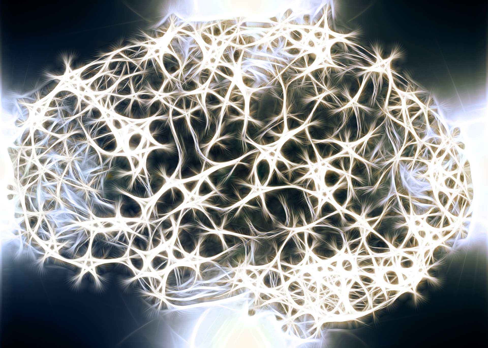

The rapid boost in next generation sequencing technologies has increased the sizes of databases. In fact, with these new technologies, scientist are opened to new possibilities and definitely new challenges. What used to be a problem of lack of data, has now become a problem of how to store these data and how to extract the information burried deep within. Thanks to organisms like Arabidopsis thaliana and a group of others known as model organisms, plant biologist have had more insights as to how the genetic material of plants drive everything we see from germination to anthesis and to fruits.
 If we take a step back to look at the DNA,
it is amazing how all of the diversity seen in the world is encoded by four nucleotides
efficiently repeated by nature to varrying lengths. A computer programmer may be tempted to
say the genetic code is the easiest code to write, but it remains the most difficult code
to decrypt. From the discovery of transposable elements by Barbara McClintock to the invention
of the CRISPR
gene editing technologies, much efforts have been directed towards linking genetic diversity
to the genetic code. In this project deep convolutional networks are used to discover the
patterns within the genetic code.
If we take a step back to look at the DNA,
it is amazing how all of the diversity seen in the world is encoded by four nucleotides
efficiently repeated by nature to varrying lengths. A computer programmer may be tempted to
say the genetic code is the easiest code to write, but it remains the most difficult code
to decrypt. From the discovery of transposable elements by Barbara McClintock to the invention
of the CRISPR
gene editing technologies, much efforts have been directed towards linking genetic diversity
to the genetic code. In this project deep convolutional networks are used to discover the
patterns within the genetic code.
Bluntly put, gene expression is the conversion of information from the DNA to phenotypes. The information in the DNA is sent to RNA in a process called transcription. The information is then forwarded to proteins in a process called translation. Again this pathway is an over summarized form of genetic information transfer and a gene is considered expressed as long as it undergoes transcription. This does not by no means imply that all genes that are transcribed get to the stage of proteins or produce external phenotypic traits. Some of the RNA produced can act as molecules on their own, others are precursors for further downstream information transfer and others get degraded. After using the word phenotypes, one may be wondering what phenotypes are then. Well genes and their variants make up the primary phenotypes, everything between a gene and the external physical trait will make up the intermediate phenotypes an the physical traits themselves are the terminal phenotypes.
Artificial neural networks are an inspiration from the brain's architecture albeit some deviation from their biological cousins. They are at the core of deep learning, from powering google to things like youtube and even Apple's famous Siri. The most important similarity between artificial neural nertworks and the brain is the hierarchy in which information is transfered. If we look at the brain on the left constructed by only its neurons, we quickly realise interconnection between several neurons. The hierarchy within such a net may not be seen from this image but there exist such a hierarchical structuring in our brains. The Hubel and Wiesel model presents the visual cortex structure as follows: LGB (lateral geniculate body)→simple cells→complex cells→lower order hypercomplex cells→higher order hypercomplex cells. It is in fact from this model that Fukushima gained his inspiration of the neocognitron which is the pioneer inspiration of modern day convolutional neural networks. The one thing humans however have which artificial neural networks lack is perception. When you look at the picture of a cute puppy you can not choose not to see the puppy or its cuteness. Neither can you explain how you recognized a cute puppy; it's just obvious. Our attention in this project was focused on one specific artificial neural network, the deep convolutional neural network. These networks are used primarily for image classification because they can identify features within images. Once a feature has been identified, it's position in future images is irrelevant. Another beuaty of these architectures is that they are not fully connected. This means each neuron is only connected to a set of neurons within a small area of the previous layer called it's receptive field.